Information complémentaire#
Je m’excuse d’avance pour les fautes d’orthographe. Dans cette partie du site je vais vous explique comment mettre à jour le site / rajouter du contenu. En parallèle je vais vous donner plusieurs d’informations concernant les pannes que vous pourrez rencontrer et le fonctionnement du réseau de l’école. je vais aussi vous expliquer le fonctionnement de l’usi, la dgnsi, la dgep, la dgo et les outils qui sont à notre disposition. Et plein d’autres choses qui pourront vous être utiles.
Mettre a jour et modifier le site#
Pour mettre à jour le site de la doc pour le helpdesk, il faut commencer par avoir les fichiers du site (le stagiaire les à au cas ou) et aller au dossier src.
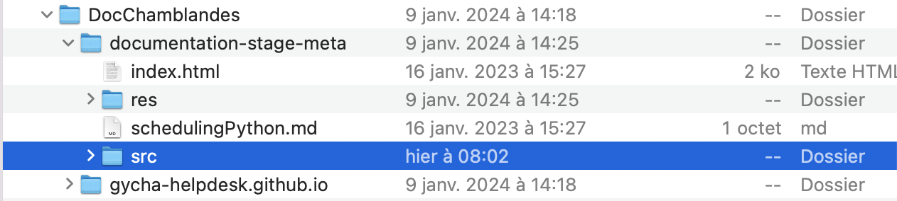{kind=link}
Ensuite, il faut ouvrir Visual Studio Code et importer le dossier src à documentations-stage-meta/src en allant sur File > Open Folder, dans la barre du haut:
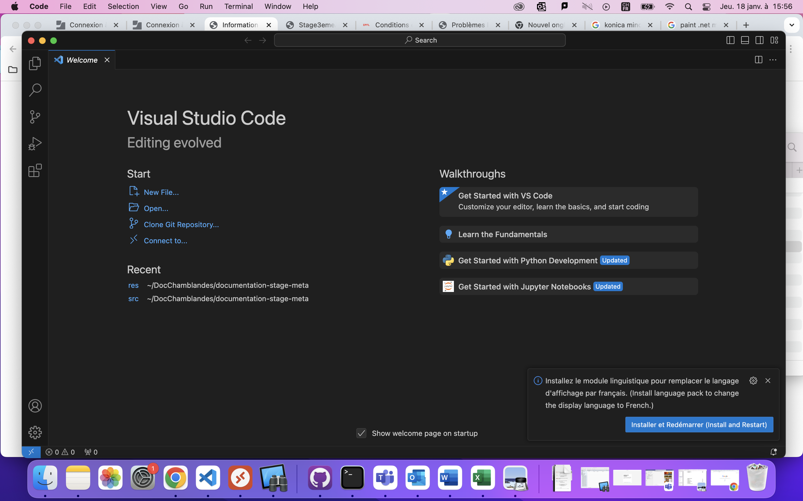{kind=link}

Quand ça sera fait, vous aurez toutes les pages en .md (Markdown) du site qui seront importées dans votre VS code, vous n’aurez plus qu’à les modifier et les sauvegarder.
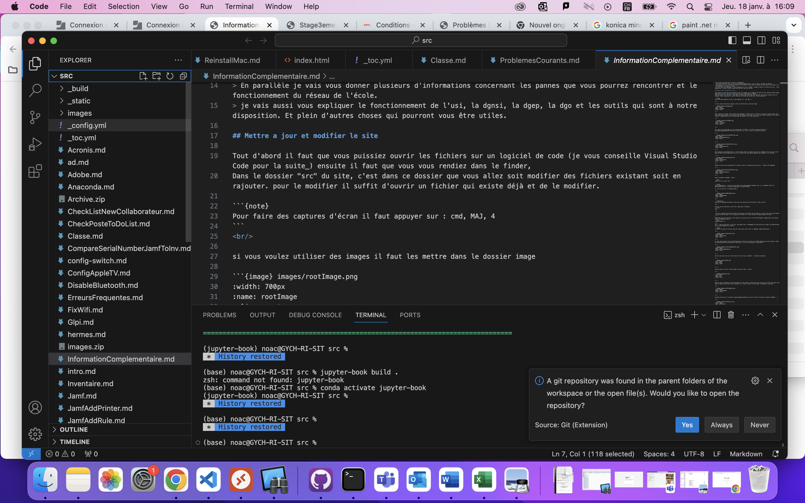{kind=link}
Comment mettre le markdown en HTML#
Pour construire le site sur la base de pages markdown que vous avez (la suite), il faut installer Anaconda (si ce n’est pas déjà fait) pour installer la library Jupyter-book qui nous sera utile pour convertir les pages markdown en html, sinon le site ne pourra pas être accessible en ligne.
Ensuite, il faudra taper la commande conda activate jupyter-book (dans un terminal visual studio code, comme sur la capture d’écran ci-dessous:) car vous êtes encore dans l’environnement par défaut et jupyter-book ne peut pas fonctionner dans celui-ci.
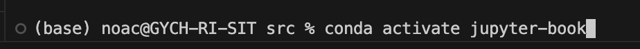{kind=link}
Dés que c’est fait, vous pourrez voir que vous serez dans l’environnement jupyter-book. C’est là qu’il faut que vous entriez la commande “jupyter-book build .” pour build tous les fichiers markdown du répertoire src dans lequel vous vous trouvez. (les convertir en HTML)
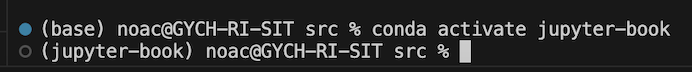{kind=link}
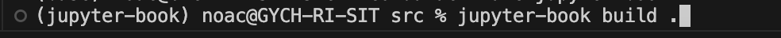
{kind=link}
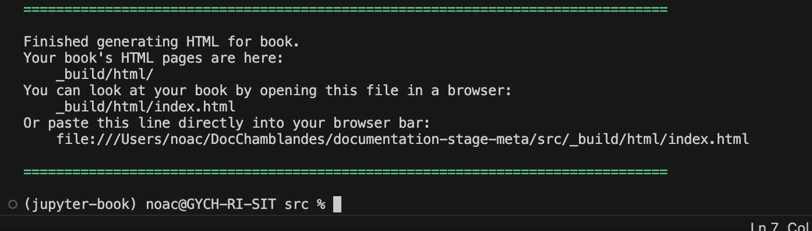
{kind=link}
Après il faudra que vous glissiez les fichiers html du dossier documentation-gycha-meta/_build/html/ dans le dossier gycha-helpdesk.github.io/9a…. (voir screenshot) et a push le tout sur github Desktop, comme l’explique la doc ci-dessous.
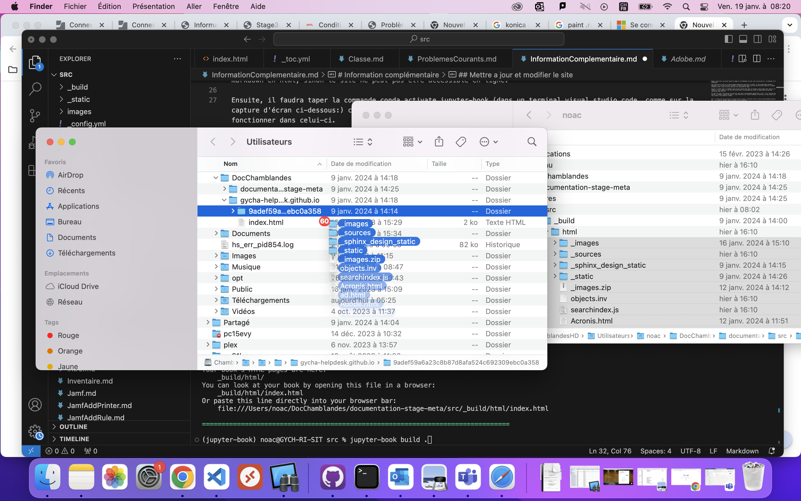{kind=link}
Si vous voulez pouvoir voir vos modifications en ligne il faut aller sur GitHub desktop pour push (envoyer) toutes les données que vous avez modifiées. Mais avant ça il faut sélectionner le bon dossier.

Une fois que vous êtes sur le bon dossier il faut faire un commmit à la branche principale.

Une fois que c’est fait il faut cliquer sur push en haut à droite.

Ensuite vous sélectionnez le deuxième dossier et vous faites la même chose. Une fois que c’est fait vous devez aller dans le Finder et vous aller sur le dossier “src > build > html” et vous copier l’intégralité du dossier.

Ensuite vous allez sur le dossier (gycha-helpdesk.github.io) et vous collez le tout dans le dossier 9adef59……

Les changements prennent ~5 mins à s’appliquer, mais si vous n’êtes vraiment pas sur n’hésitez pas à refaire la commande jupyter-book build . sur VS code et à glisser les fichiers html de nouveau
Schéma réseau des salles de classe en général#
VLAN :
GYCHA - VLAN 100 - Management
GYCHA - VLAN 101 - Printers
GYCHA - VLAN 102 – CORP, ce réseau est présenté en WiFi sous - SSID EDUVAUD-INTERNE
GYCHA - VLAN 103 - WiFi EDUVAUD-ELEVES
GYCHA - VLAN 104 - WiFi Guest
GYCHA - VLAN 105 - WiFi EDUVAUD-ENSEIGNANTS
GYCHA - VLAN 106 - WiFi IoT
Le switch HDMI#
Note
Normalement a l’avant il y a juste le bouton power et input, le bouton input change quel câble hdmi sera affiché au beamer. Comme on peut le voir sur l’in 1 ça sera la Wacom donc l’ordinateur fixe (le mac mini). In 2 ordis perso donc l’ordinateur que le prof amène ou les élèves. In 3 c’est pour la caméra qui est dans la salle.
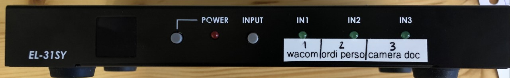
{kind=link}
Note
Le port HDMI “output” c’est le câble HDMI qui relie le beamer (il sert de sortie pour toutes les autres entrées hdmi), l’in 3 est relié à la caméra, l’in 2 à l’ordi perso, et l’in 1 au mac mini.
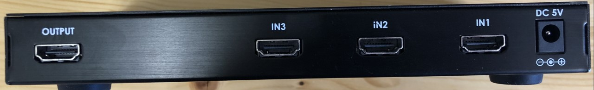
{kind=link}
Le mac mini#
Note
Sur le mac mini ce n’est pas compliqué même s’il en donne l’impression. Tout à gauche c’est l’alim du mac mini, ensuite c’est le câble réseau donc internet (sur la photo c’est le câble rouge). Après tout le reste est relié ensemble jusqu’au même câble. Sur ce même câble il y a le câble HDMI du mac mini, un câble USB (il sert à relier les ports USB de la Wacom au mac mini s’il y en a) et pour finir l’alim de la Wacom et tous ces câbles sont réuni en un seul et il est connecté à la wacom.


Fonction / schéma de l’usi / dgep / dgnsi#
Pour gérer le support des écoles post obligatoires ils ont créé un système en suivant le modèle d’ITIL.
Donc pour commencer toutes les écoles ont un helpdesk (le niveau 1) si les commandes dépassent notre compréhension ou si elles dépassent notre domaine d’action. Le niveau 2 c’est l’USI, le niveau 3 c’est les ingénieurs qui sont aussi a l’USI mais c’est une autre partie et pour finir il y a le niveau 4 qui est le fournisseur des applications ou des services.
Note
Sur le schéma on peut constater qu’une personne exécute plusieurs fonctions en même temps, Simplement c’est le chef de l’USI donc il a plusieurs postes.

Note
L’USI peut aussi accéder au serveur SQL et y exécuter des commandes.
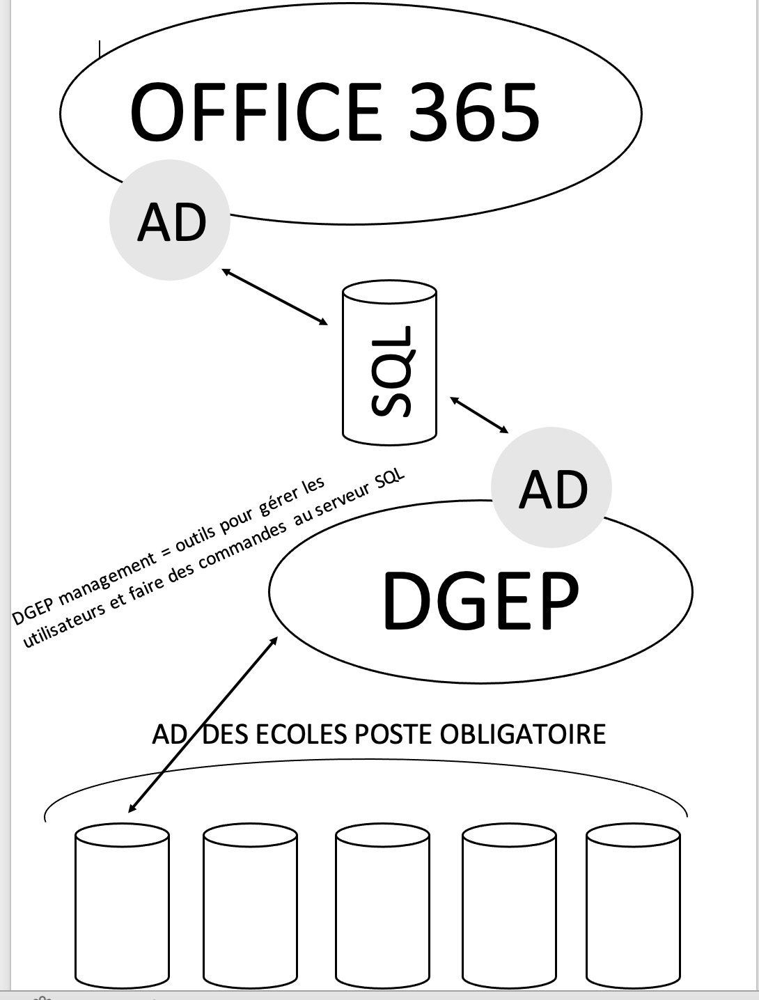
{kind=link}
Informations supplémentaire#
kahoot#
Sur kahoot il est possible de lancer en boucle un quiz. Pour ce faire il faut accéder à la bibliothèque ou sont organisés tous vos quiz. Ensuite cliquez sur jouer (sélectionnez le quiz que vous voulez lancer en boucle).
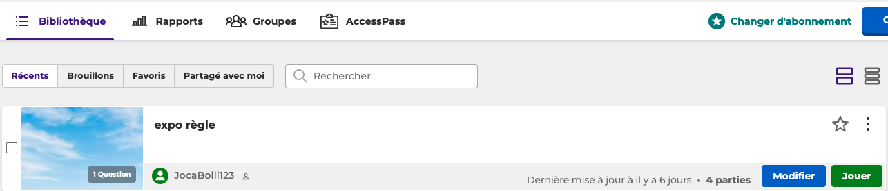
{kind=link}
Ensuite une pop-up s’affichera avec deux modes de jeu, choisissez celui de gauche.

Une fois le mode de jeu choisi il faut aller dans les options pour les afficher en selectionnant passer automatiquement les questions des questions.

VMware / vSphere#
Comment se connecter a vSphere

Sur vSphere il y a une notation un peu spéciale que vous pourrez retrouver ici :
DUS = DC (Domain Controller)
NGE = Network (DHCP, NPS, FFSO)
PGE = Printer (papercut)
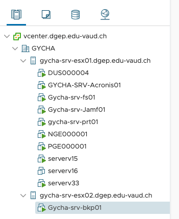
{kind=link}
Site de vente / achat et imprimante#
L’ancien nom du site de “vente, achat” de matériel pour les établissements post obligatoire s’appelait “le Dol”. Maintenant ils ont changé pour “la place”.
Note
Les écoles post obligatoire ont des rabais immenses sur les licences, le matériel etc. (chez Dell ça peut aller jusqu’à du 60% voir plus). Ils ont des licences office pouvant aller jusqu’à 5.- par personne.
Pour dépanner les imprimantes en général c’est parce que la personne a mal tapé son mot de passe du coup il faut réafficher le pop-up et pour ça il faut soit relancer une impression soit cliquer en bas à gauche de l’écran ensuite il faut cliquer sur la petite flèche et normalement ça réaffichera le pop-up.
Si rien de tout ça ne marche alors vous pouvez aussi redémarrer le serveur d’impression.
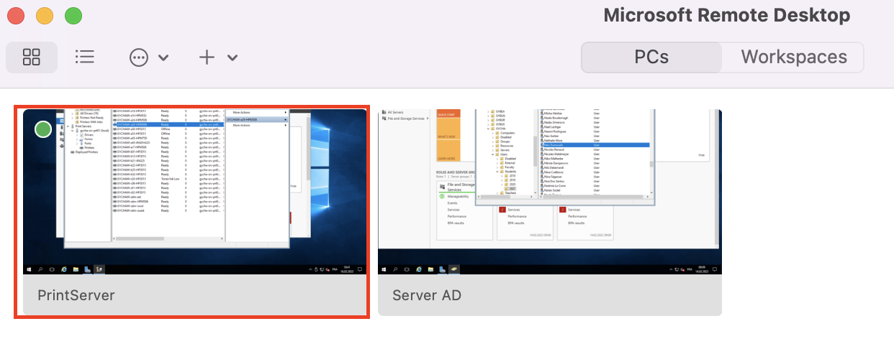
{kind=link}
si le redémarrer ne marche pas non plus vous pouvez aller dans “tools” puis “print management”. Ensuite cliquer sur “All Printer”. Dans cette interface vous pouvez régler plusieurs choses notamment supprimer les impressions en file d’attente, etc…
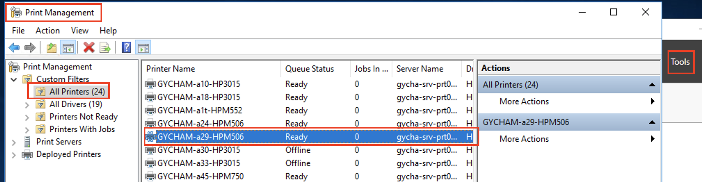
{kind=link}
Ajouter l’imprimante du bureau.#
aller dans imprimantes et scanners.
ensuite cliquer sur le petit + . Ensuite clique droit sur la barre puis sélectionner personnaliser. ensuite il faut glisser déposer les options avancées dans la barre de recherche
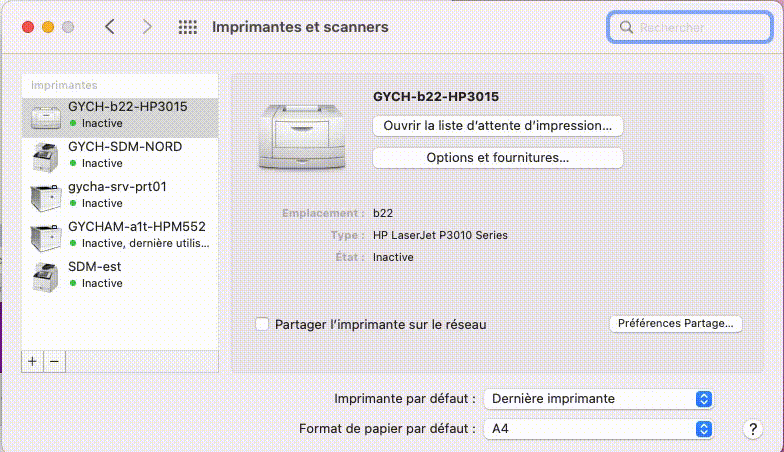
{kind=link}
Parfais ensuite il faut configurer comme suit :
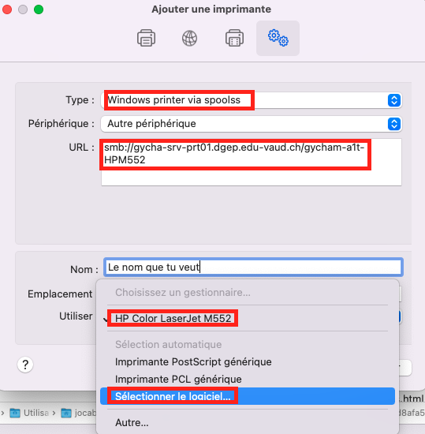{kind=link}
et voilà il faut juste cliquer sur ajouter et vous avez rajouté l’imprimante du bureau.
Problème d’affichage quand on créé une section sur le site#
Quand on créé une section pour la première fois si vous ne voulez pas qu’il y ai un problème d’affichage.

Note
Pour pouvoir mettre un gif sur le site j’ai utilisé un site de conversion de fichier .mov en .gif (les fichiers .mov c’est les fichiers quand tu fais une vidéo de ton écran). Ensuite tu les places dans le dossier images du site et voilà
il faut impérativement exécuter la commande suivante si vous voulez régler le problème :
jupyter-book clean .
Attention
pour que la commande fonctionne il faut que vous soyez dans le bon dossier (celui du site). Au même endroit que pour rexecuter la commande jupyter-book build .
Attention
Ensuite il faut absolument exécuter la commande :
jupyter-book build .
Groupe d’élève / Son dans les salles#
En générale un élève dervais avoir tout ces groupes :
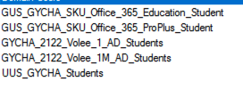
{kind=link}
Si vous voyez qu’il n’a pas tous les groupes, appelez votre maître de stage et demandez-lui si vous pouvez rajouter les groupes manquant manuellement.
Dans les salles de classe il y a 2 manières de comment le son fonctionne.
La première c’est qu’il y a dans les salles de classe une / un empli qui permet d’émettre du son et dans ce cas il n’y a pas besoin d’allumer le beamer mais il faut se connecter dessus avec soi ordinateur perso soit avec le mac mini mais a disposition dans les salles. (si ça ne marche pas il faut vérifier la source sur l’emplir). en général c’est tablette ou un truc du genre. Si ça ne marche pas aller dans les préférence et vérifier que la sortie soit la bonne
Voilà a quoi resemble une / un empli dans une salle de classe.
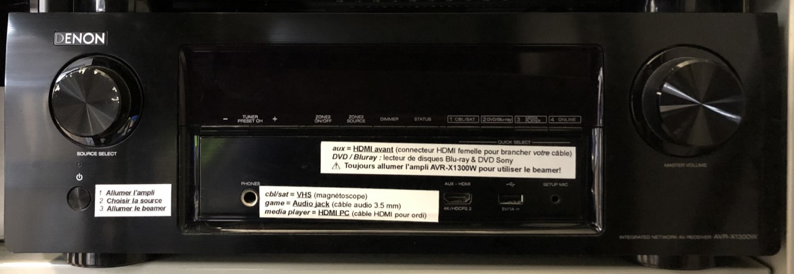{kind=link}
La deuxième option c’est qu’il n’y a pas d’empli et dans ce cas la il faut allumer le beamer qui va lui se connecter automatiquement au haut-parleur qui est dans les salles de classe et émettre du son. (Si ça ne marche pas il faut aller dans préface système, est sélectionné la 3ème source : la 1 c’est le mac mini en général c’est marquer interne quelque chose, la 2 c’est la Wacom en général c’est DTK-des chiffres, du coup il faut sélectionner la 3ème).
Recherche JAMF#
Si vous lancez jamf pour la première fois il est possible que vous ne puissiez pas effectuer des recherches quand vous êtes sur “ordinateur”. Pour résoudre le problème c’est très simple.
Aller sur Jamf, ensuite cliquer sur votre profil
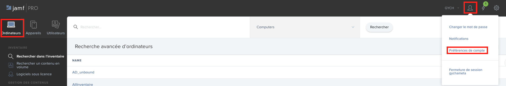
{kind=link}
Ensuite il faut aller sur préférence de recherche est modifié si vous êtes en “Exact match” en “contains”
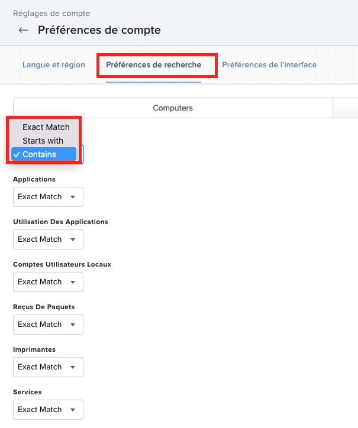
{kind=link}
DashBoard jamf#
Quand vous vous connectez à Jam vous arriver par défaut sur le dash board. Sur cette fenêtre il sera affiché toutes les règles que vous avez en “favoris” cela permet de suivre leur avancement, est d’observer graphiquement plusieurs informations.
Note
Vous pouvez mettre plusieurs règles, et pour voir plus d’informations il suffit de cliquer sur la règle.
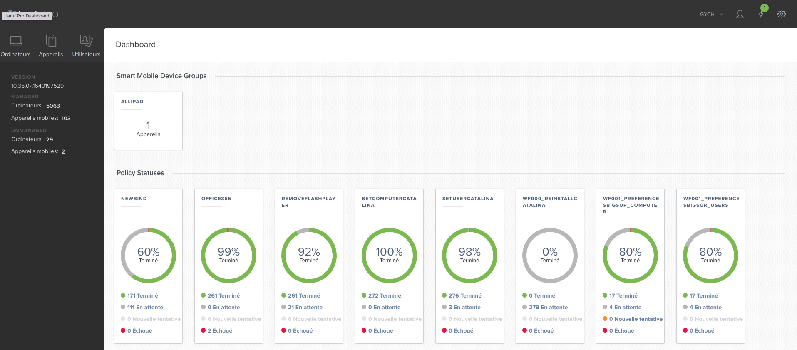
{kind=link}
Pour mettre une règle en “favoris”, il faut que vous recherchiez votre règle. Une fois que vous êtes dessus en haut à droite il y a une case à cocher, il suffit de la cocher est quand vous retournerez au dashboard votre règle serra afficher.
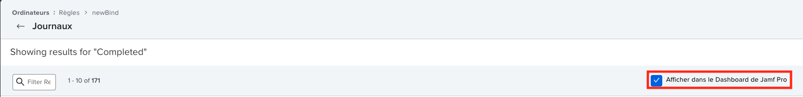{kind=link}
Comment modifier le fichier inventaire.#
Pour commencer il faut aller sur teams. Dans l’équipe GychaIT > ensuite dans le groupe > gestion de postes > File > le dossier de l’année corespondantes.
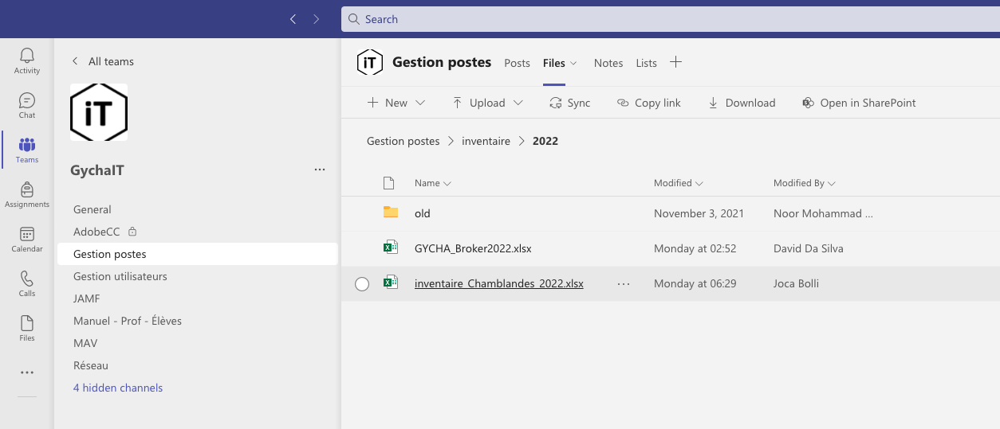{kind=link}
Ensuite faites les modifications que vous voulez. Une fois fini il faut mettre ce fichier sur le serveur en remplaçant l’autre fichier déjà existant :
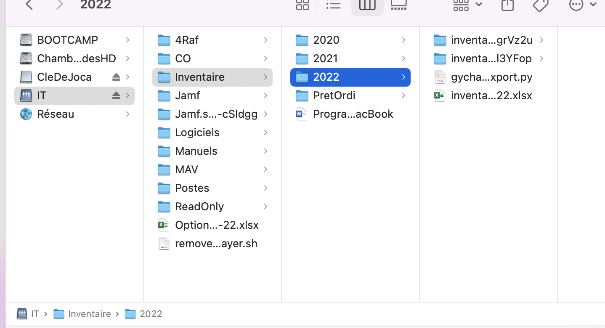{kind=link}
Ensuite il faut lancer le script python qui va renter les données dans un autre fichier.
Normalement dans votre terminal vous devriez avoir quelque chose de similaire.
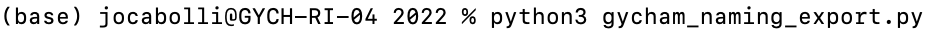{kind=link}
Note
Le script pyton est au même endroit que le fichier excel inventaire. Pour le lancer il faut aller dans le terminal, aller au même endroit ou le script est en utilisant : (cd leCheminOuSeTrouveLeScript)
une fois que vous êtes dans le bon dossier il faut exécuter cette commande :
python3 LeNomDuScript
Pour vérifier que vos changements on bien est effectué il faut aller sur le seveur et regarder le fichier
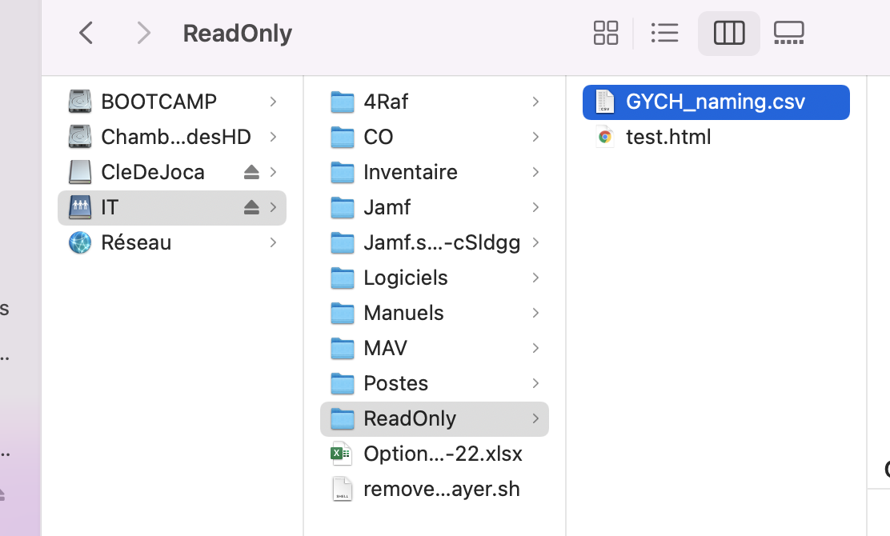{kind=link}
Mettre en ligne des vidéo sur YouTube / Imovie#
Avant de commencer il vous faut Imovie et une chaîne Youtube.
Sur Imovie pour créer un projet il faut cliquer sur le + et ensuite cliquer sur le film. (si quand vous ouvrez Imovie pour la première fois et que vous n’êtes pas sur la bonne fenêtre il faut cliquer sur projet en haut à gauche de l’écrant).
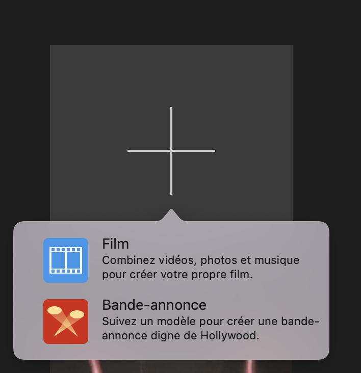{kind=link}
Attention
Même si vous avez créé un nouveau projet vous pourrez quand même modifier les autres.
Note
Il y a aussi une banque d’images et de son
Ici vous retrouverez tous les projets vidéo que vous avez.
C’est le curseur qui permet que quand vous lancer la vidéo elle se lance la ou le curseur et placé.
Ici vous verrez tous les fichiers son ou image ou je ne sais quoi que vous aurez soit drag and drop soit importé. Vous pouvez faire beaucoup de choses avec un clique droite, comment par exemple ajuster le volume du son ou encore couper la vidéo ou mettre des transitions. bref il y a beaucoup de possibilités. Vous pouvez même accélérer la vidéo.
Fichier son
Cette règle permet de modifier la taille d’affichage des fichiers audio et vidéo.
Quand vous double cliquer sur une image vous pouvez choisir un point de départ et un point d’arrivée pour pouvoir créer des effets pendant la vidéo. (Des effets de zoom ou d’effet de droite à gauche)
{kind=link}
Une fois que vous avez fini votre projet il faut que vous cliquiez sur “projets” en haut a gauche. Pour que vous lui donniez un nom.
Ensuite pour télécharger votre vidéo il faut cliquer sur les 3 petits point “…” ensuite sur “partager le projet”, et pour finir sur “fichier”
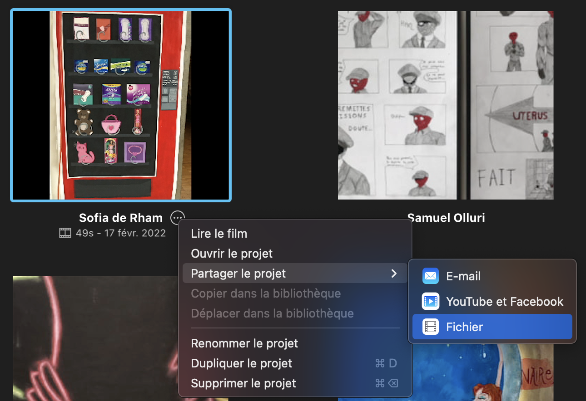{kind=link}
Ensuite une fenêtre apparaîtra avec plusieurs options je vous conseille de mettre la résolution à 720p (ça suffit largement). Le reste à vous de jugé si vous le voulez ou pas.
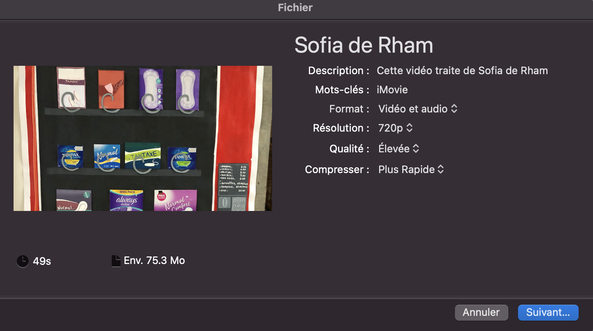{kind=link}
Voilà vous savez plus ou moins utiliser Imovie. Maintenant on va passer à la mise en ligne de la vidéo sur Youtube.
Tout d’abrod il faut que vous vous rendiez sur Youtube Studio (ça permet de gérer vos chaînes YT). Quand vous êtes dessus il faut que vous appuyer sur le menu à gauche “Tableau de bord”. Puis “importer des vidéos.
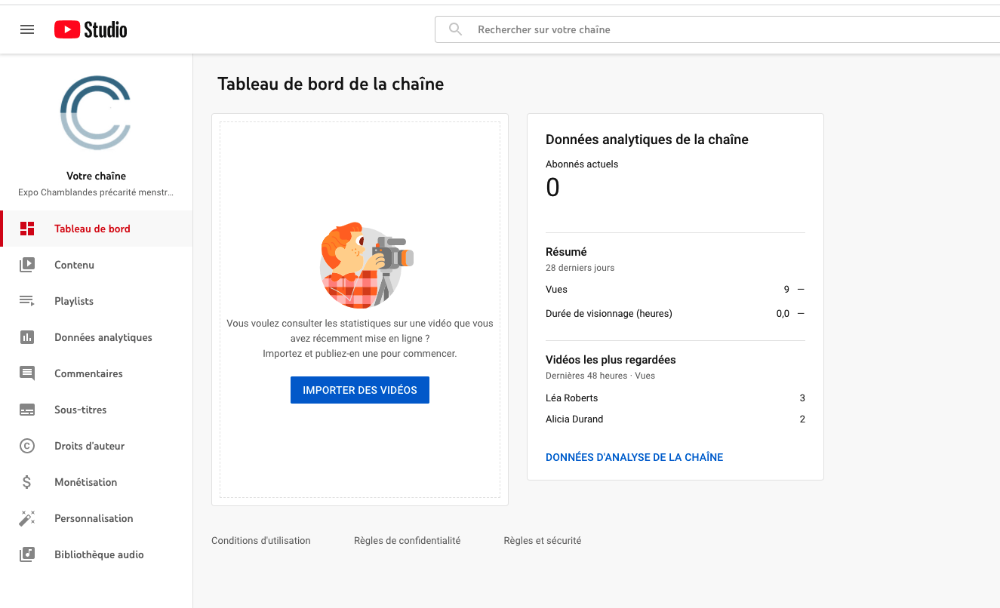{kind=link}
Ensuite vous sélectionner votre fichier qu’Imovie vous a fourni puis vous le drag and droper ou alors vous aller le chercher au bon emplacement. Une fois que vous avez sélectionné le bon fichier vous arriverez sur cette fenêtre :
sur cette fenêtre vous aurez 2 choses a changer la première c’est que la vidéo n’est pas conçue pour des enfants (sauf si c’est le cas). Ensuite vous cliquez sur “Plus”
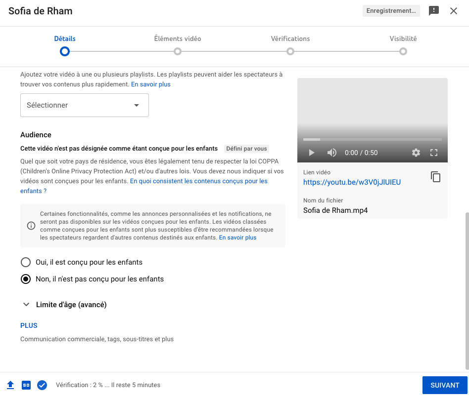
{kind=link}
Ensuite vous descendez tout en bas de la page et vous sélectionner Desactivier les commentaires. (je fais ça uniquement pour éviter les mauvaises surprises du genre troll ou insulte envers la personne qui parle).
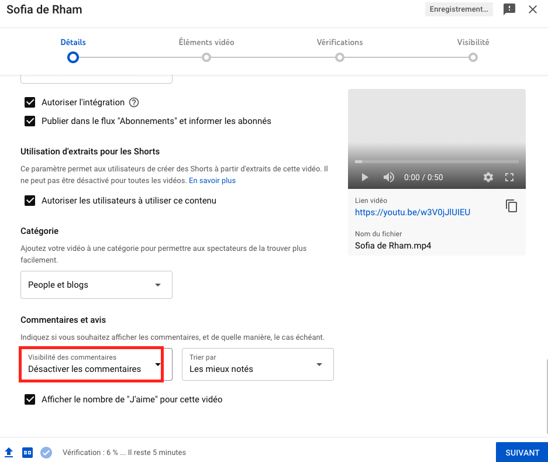{kind=link}
Après ça vous attendez que votre vidéo finisse de charger et que Youtube finisse de vérifier que votre vidéo est conforme à leurs règles. (cette opération peut prendre quelques minutes). Ensuite vous cliquez sur le suivant, suivant, suivant jusqu’à arriver au dernier point. Et vous cochez la case “non répertoriée”.
Note
Cela permet de ne pas retrouver la vidéo quand vous effectuez une recherche sur Youtube.
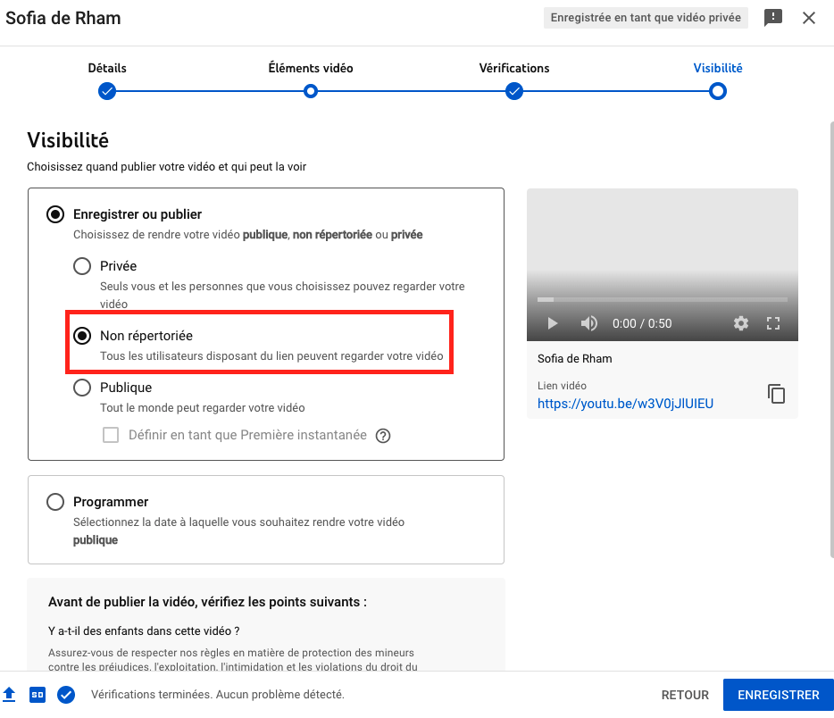
{kind=link}
Cliquer sur terminer et revenez sur la page de Youtube Studio, dans le menu a gauche sélectionner “Contenu de la chaîne” et vous pourrez effectivement voir que votre vidéo a été mise en ligne et quelle est en mode “non répertoriée”.
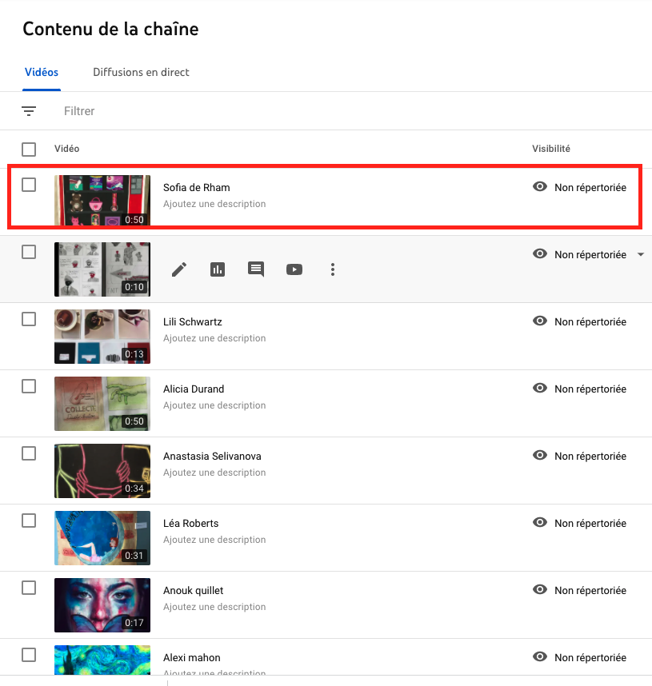{kind=link}
Créer un PDF du site à partir de jupyter-book#
Il est possible de créer un PDF à partir du code HTML de votre book.
Installation#
Votre système devra utiliser pyppeteerpour analyser le HTML généré pour la conversion en PDF.
Vous pouvez l’installer comme ceci :
pip install pyppeteer
Vous devrez peut-être également installer cet ensemble de packages ci-dessous (sur les systèmes * nix (dans le doute je l’ai installé)):
gconf-service
libasound2
libatk1.0-0
libatk-bridge2.0-0
libc6
libcairo2
libcups2
libdbus-1-3
libexpat1
libfontconfig1
libgcc1
libgconf-2-4
libgdk-pixbuf2.0-0
libglib2.0-0
libgtk-3-0
libnspr4
libpango-1.0-0
libpangocairo-1.0-0
libstdc++6
libx11-6
libx11-xcb1
libxcb1
libxcomposite1
libxcursor1
libxdamage1
libxext6
libxfixes3
libxi6
libxrandr2
libxrender1
libxss1
libxtst6
ca-certificates
fonts-liberation
libappindicator1
libnss3
lsb-release
xdg-utils
wget
Appliquer les commandes / construire le PDF#
Pour créer un seul PDF à partir du code HTML de votre book, utilisez la commande suivante :
jupyter-book build . --builder pdfhtml
ou
jb build . --builder pdfhtml
Voilà ensuite rendez-vous dans vore dossier Src > build > PDF et vous y retrouverez le PDF
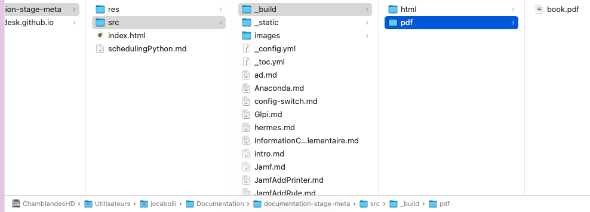{kind=link}
Rajouter des imprimantes avec CUPs 2.3.4#
Note
Tout d’abord il faut aller sur un navigateur est tapez l’adresse suivante : localhost:631
voici la commande pour afficher l’interface graphique de cups et potentiellement régler des problèmes de connexion au site : cupsctl WebInterface=yes
Attention pour pouvoir rajouter des imprimantes où simplement utiliser cups il faut que pour pouvoir se connecter sur votre machine avec un compte qui a un mot de passe. Sinon vous serez bloqué, car cips demande le mdp du user de la session.
Normalement vous devrez arriver sur cette page (voir ci-dessous). Si c’est le cas cliquer sur “administration”
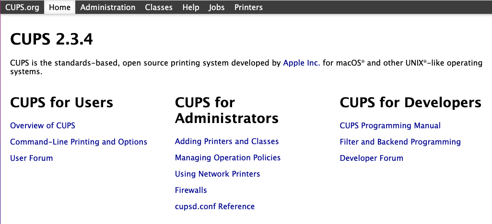
{kind=link}
Une fois que vous avez cliqué sur “administration”. La page ci-dessous devrait s’afficher. Une fois que vous êtes sur cette page il vous faut cliquer sur Add printer.
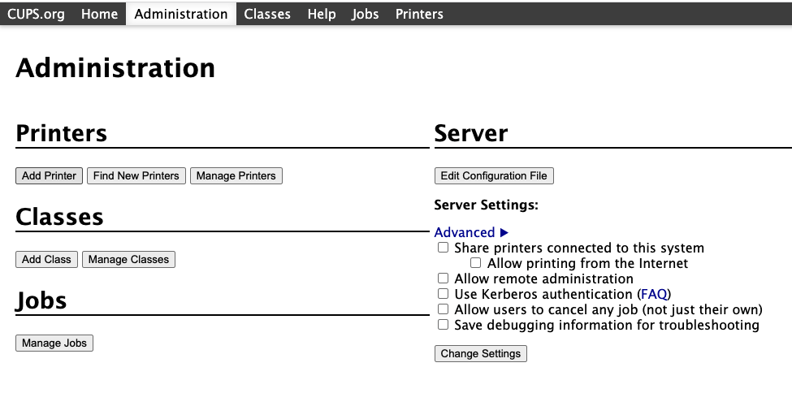{kind=link}
Note
Si vous cliquez sur manage Printer vous pouvez modifier les paramètres que nous allons modifier lors de la création et vous pourrez voir toutes les imprimantes que vous avez rajoutées.

Selectionné “LPD/LR Host or Printer” ensuite cliquer sur “continue”.
Ensuite vous arriverez sur cette fenêtre. Ici il faut noter la même chose qu’avant donc : lpd://pge000001.dgep.edu-vaud.ch/gycham- La salle de l’imprimante - le modèle de l’imprimante (ex. gycham-b18-HP3015). Puis cliquer sur continue.
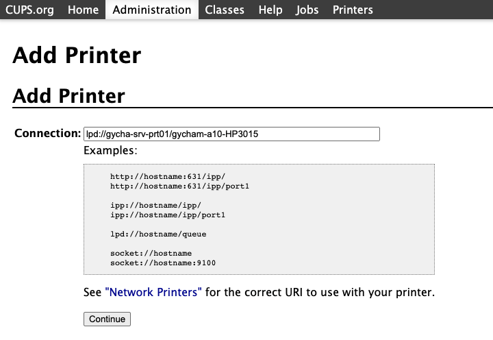{kind=link}
Sur l’image ci-dessous, recopier le nom en mettant le bon nom
Attention
Sur l’image, à droite de (Connexion: juste après l’a18 il y a 2 tirets “- -”, c’est une erreur de ma part).
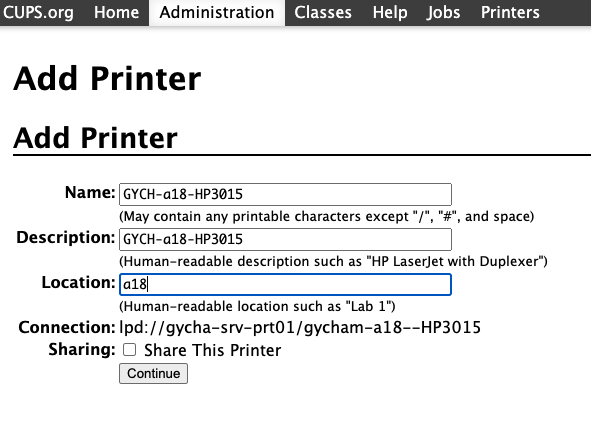
{kind=link}
Maintenant il faut sélectionner “HP” et cliquer sur continue (sur l’image ci-dessous)
Attention
Il ne faut pas cliquer sur “choisir un fichier ni Add Printer”
{kind=link}
ensuite sélectionner le bon driver (celuil qui correspond à votre imprimante donc : pour les HP3015 c’est le p3010 pour le PHM506 c’est le M506, pour le HPM552 c’est le M552 etc…)
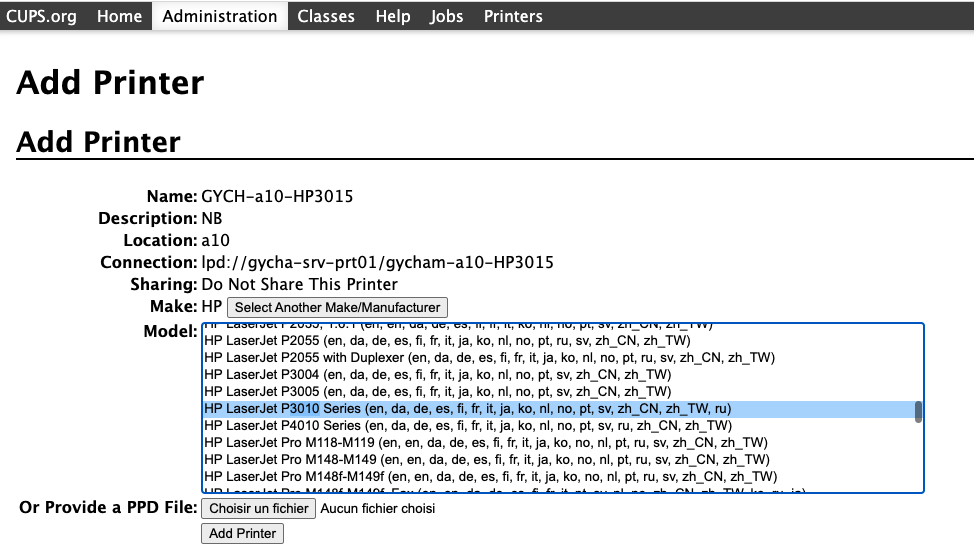{kind=link}
Sur la prochaine fenêtre il faudra changer plusieurs petits paramètres pour permettre l’impression recto-verso et valider le format de l’impression.
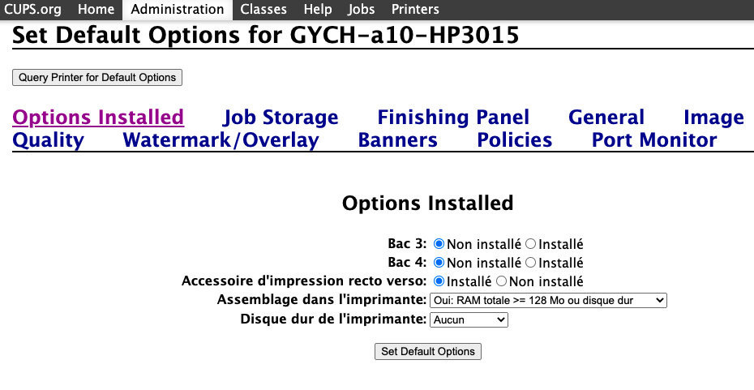{kind=link}
sur l’image ci-dessus il faut cocher “installé” pour “l’accessoire d’impression recto-verso”. ensuite cliquer sur Général (le bouton est en bleu).
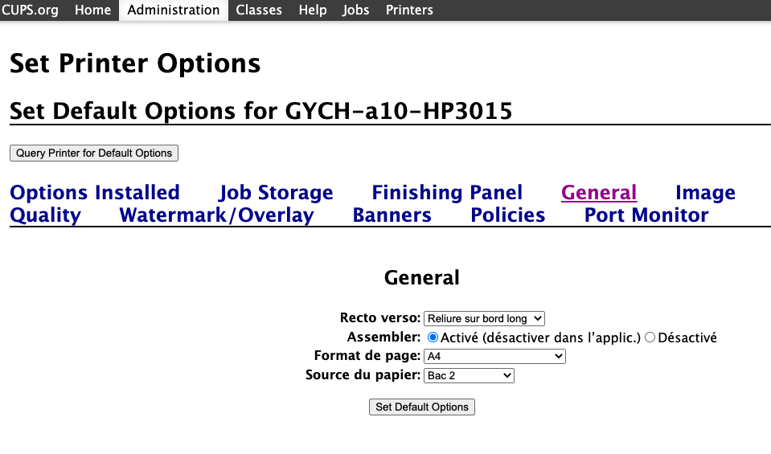
{kind=link}
sur l’image ci-dessus il faut sélectionner “Reliure sur bord long” pour “recto-verso” et si ce n’est pas déjà fait il faut sélectionner “à4” dans “format de page”.
Pour accéder à la page suivante il faut cliquer sur “Finishing panel”. Ensuite il faut modifier “le papier pour brochure” et le mettre en “a4”
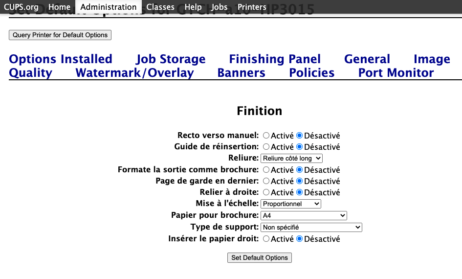{kind=link}
Attention
Il ne faut surtout pas oublier de cliquer sur SET DEFAULT OPTION pour que les modifications soient sauvegardées.
Attention
Les imprimantes des salles de dessin et de la salle des maîtres utilise des drivers différents car ce sont des imprimantes cannon et non pas HP comme le reste du gymnase. (Sdm-est = c5535/5540), (sdm-ouest et sdm-nord = 6555/6565). Le paramétrage et aussi un peu différent.

Attention
Image du dessus = SDM-EST
Image du dessous = SDM-NORD
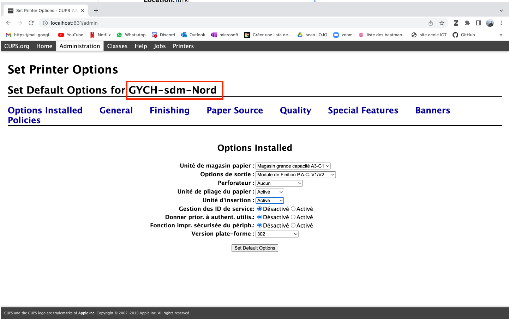
{kind=link}
Ajouter une imprimante sur le serveur et lui attribuer une adresse IPV4 fixe.#
Pour ajouter une imprimante sur le serveur et lui attribuer une adresse IPV4 fixe est plutôt simple. Avant de commencer vérifier que vous avez accès au serveur DHCP et que vous avez également accès au serveur d’impression. Une fois que c’est bon vous pourrez commencer. Tout d’abord il faut aller sur le serveur d’impression (celuil du milieu). Voir image ci-dessous. (PrintServe).
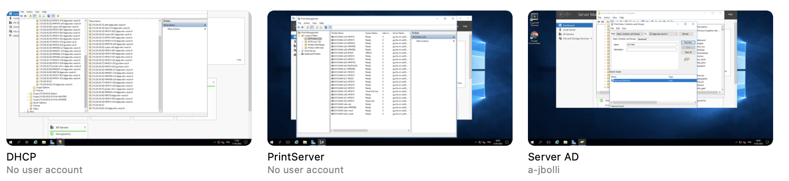
{kind=link}
Une fois que vous êtes connecté au serveur d’impression aller dans la console de management et aller dans l’onglet print management. Normalement vous devriez avoir quelque chose de similaire à la capture d’écran ci-dessous. Maintenant que vous êtes ici, cliquer sur (Print Serveurs) et ensuite cliquez droit sur “Printer” puis “add Printer…”
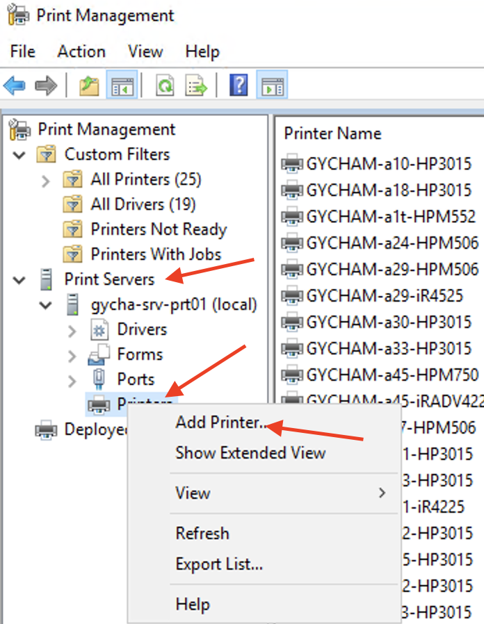
{kind=link}
Pour la suite il faut “juste” cliquer sur next - next - next, c’est assez logique (si vous avez des doutes demander à David par précaution). À un moment donné par exemple il faut savoir ladresse IP de l’imprimante que vous voulez rajouter, en bref ce n’est pas super-compliquée mais si vous avez de doute vous pouvez toujours demander à David. Maintenant que vous l’avez rajouté sur le serveur d’impression il faut lui attribuer une adresse IPV4 fixe est pour ce faire il faut aller dans le DHCP.
Attention
Si vous essayer d’aller sur le DHCP qu’il y a sur le serveur AD ça ne va pas marcher, je sais pas pourquoi. (Il faut demander à David pourquoi ça ne marche pas).
Du coup il faut ajouter un “serveur DHCP” sur remonte desktop. Pour le faire il y a une marche à suivre quelques pars sur ce site mais je vais vous réexpliquer comment faire. Il fut vous rendre sur la remonte desktop, et cliquer sur add PC.
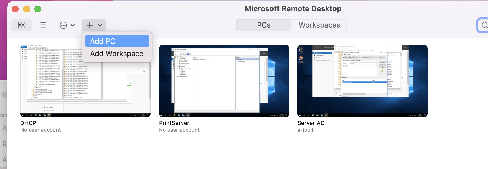
{kind=link}
Une fois que vous avez cliqué sur “add PC” Il faut juste mettre l’adresse IP du serveur en question et de lui donner un nom cohérent dans mon cas DHCP me convient parfaitement. normalement le reste des paramètres ne doit pas être changé, en gros vous laisser les paramètres par défaut mais vérifier quand même par rapport à ce que j’ai mis.
{kind=link}
Maintenant vous devriez le voir apparaître dans la fenêtre sur remote desktop. Cliquer dessus (il nous reste quelque petit Réglages à faire).
{kind=link}
Une fois que vous êtes connecté sur votre serveur dchp, rechercher le/la “console management” dans la barre de recherche si elle n’est pas déjà ouverte, puis aller sur tools > DHCP. Ensuite dans l’onglet DHCP sélectionner “IPv4” et ouvrez le dossier “Scope Imprimantes” puis cliquer droit sur “réservation”. Ensuite cliquer sur “New Reservation…”.
{kind=link}
{kind=link}
Note
Si vous voulez mettre une nouvelle imprimante mais garder le nom de l’ancienne (par exemple quand on remplace une imprimante dans une salle de classe). Vous pouvez, il faut juste que dans le paramètre de l’image ci-dessous vous mettez e même nom.
{kind=link}
Installer les imprimantes gycha-print (Konica minolta c220) sur ordi perso#
Pour installer les imprimantes Konica sur les ordi perso des profs, si jamais on vous le demande, il faut commencer par installer le driver Konica c250i sur le poste. Pour ce faire, il faut aller sur https://www.konicaminolta.ch/fr-ch/support/download-centre
et renseigner le modèle de l’imprimante, comme sur la capture d’écran ci-dessous:
{kind=link}
Ensuite il faut cliquer sur le petit (+)Pilote et choisir le bon driver. Il faut simplement renseigner la bonne version d’OS (Windows/MacOS) et télécharger le deuxième driver car c’est le plus récent.
{kind=link}
Il faudra accepter le contrat de licence et télécharger le deuxième fichier (le .dmg). Après, il faudra double cliquer sur le dmg installé et aller au répertoire qui a été créé (un disque “IT6” sera monté), et installer le .pkg qui est dans le disque.
{kind=link}
Comment ajouter une image dans la doc#
Si vous voulez importer des images, il faut les glisser dans le dossier documentation-gycha-meta/src/images, et vous pouvez vous baser sur le code déjà fait pour voir comment importer les images en markdown.